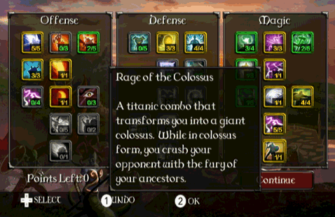

L'albero delle abilità ti permette di personalizzare il tuo personaggio. Queste abilità ti offrono nuove combo, oltre a rendere il tuo personaggio più potente. Ogni volta che sconfiggi un nemico, guadagni punti aggiuntivi nell'albero delle abilità.

Devi usare cinque punti in ogni riga dell'albero prima di poter guadagnare i poteri della riga sottostante.
Ci sono tre categorie da cui puoi scegliere, ognuna delle quali offre premi diversi nel corso del gioco:
Attacco: Si concentra sulla potenza dei colpi, sull'ottenimento di colpi critici, e sul prosciugamento della salute degli avversari.
Difesa: Si concentra sulla riduzione dei danni subiti, sull'aumento dei blocchi degli attacchi nemici, e sull'abilità di curarti durante il combattimento.
Magia: Si concentra sulla generazione di più energia per eseguire combo e incanalare l'elettricità contro i tuoi avversari.

In fondo a ogni albero delle abilità, si trovano dei colpi di grazia combo davvero potenti. Per esempio, l'albero della Magia ha l'abilità di trasformarti in un colosso. Devi investire pesantemente i tuoi punti in una singola sezione dell'albero delle abilità per poter ottenere l'accesso a questi superpoteri.